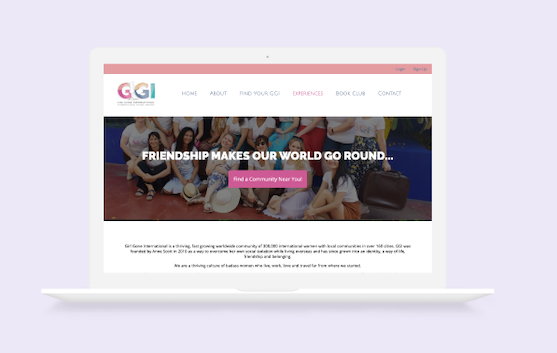
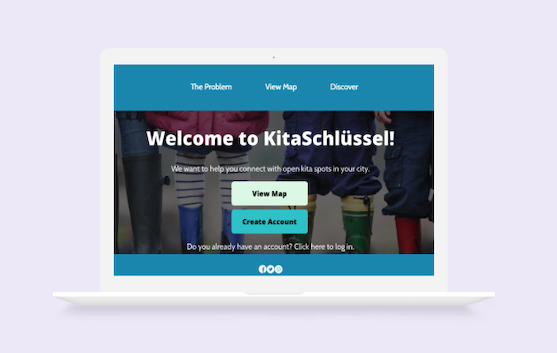

About Me
In a past life, I was a digital marketing professional. Over the past year, I have pivoted my career trajectory to focus on building websites and apps. I am passionate about problem-solving and providing awesome user experiences. I specialise in incorporating CSS and JavaScript elements into Squarespace websites. You can view my portfolio at www.lwrocks.com. I am currently enrolled in the full-stack development bootcamp at Ironhack. Once the bootcamp is complete, I will be open to freelance or full-time opportunities in front end or UI development. In addition to my work as a Creative Developer, I am a community manager for Girl Gone International.
Languages & Frameworks
- HTML
- CSS
- JavaScript
- jQuery
- Node.js
- React.js
- MongoDB
- Express
- Git
- Squarespace
- Webflow
- Responsive Web Design
Projects
Check out some of my recent projects!

Girl Gone International
Tech Stack: CSS, JavaScript, Node.js, Handlebars, Express, MongoDB, Mapbox API
KitaSchlüssel
Tech Stack: JavaScript, React.js, CSS, Node.js, MongoDB, Mapbox API
Let's work together!
If you have a fun project idea, get in touch and let's chat about it!